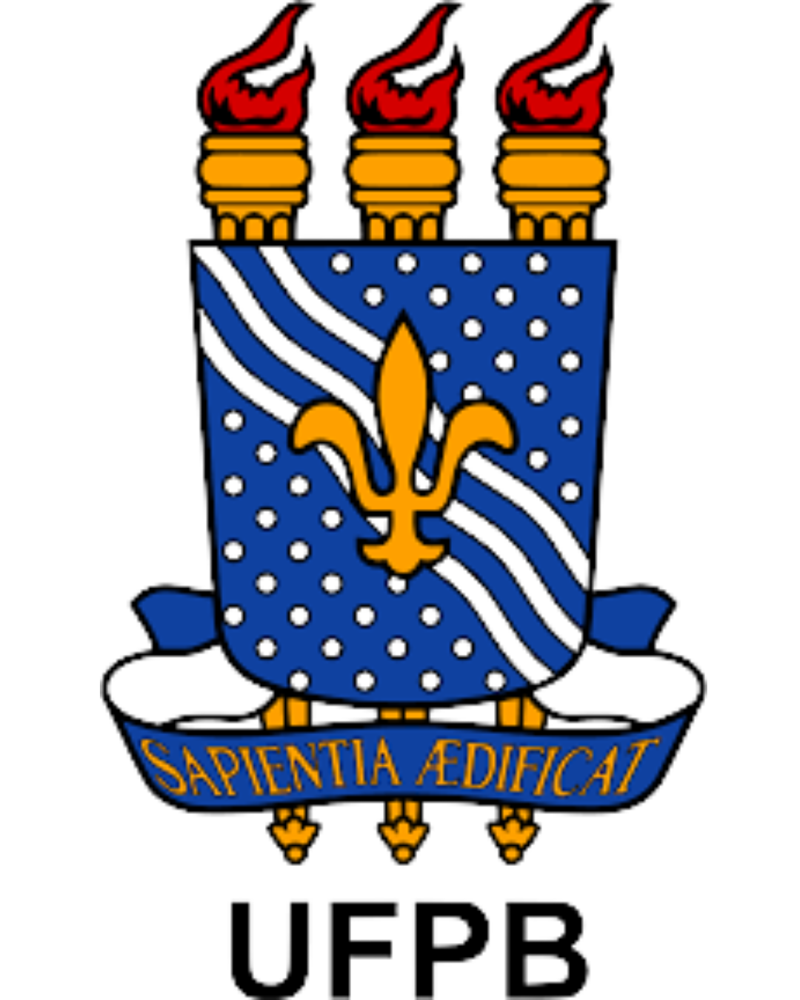

Histórico do Projeto
O projeto LocoMove nasceu da necessidade de desenvolver ferramentas acessíveis para acompanhar e registrar o desempenho de cadeirantes durante a prática de exercícios físicos. A iniciativa surgiu de uma parceria interdisciplinar entre as áreas de Educação Física e Medicina, com o objetivo de promover o condicionamento aeróbico e a qualidade de vida de pessoas com lesão medular.
Trajetória do Projeto
Início no CCM
O projeto teve início no Centro de Ciências Médicas (CCM) da UFPB, como parte de uma parceria entre profissionais de Educação Física e Medicina. Nesta fase inicial, foram realizados os primeiros testes e desenvolvidos os protocolos de exercícios adaptados para pessoas com lesão medular.
Transferência para o Campus Sede
Posteriormente, o projeto foi transferido para uma sala dedicada no Campus Sede da UFPB, no setor de Educação Física. Esta mudança permitiu ampliar a estrutura e dar continuidade às pesquisas com maior integração acadêmica.
Localização Atual
Atualmente, o projeto está sediado no Instituto dos Cegos de João Pessoa, onde continua atendendo pessoas com lesão medular e promovendo a inclusão através do esporte e da atividade física adaptada.
Na Mídia
Reportagem do Projeto
No início do projeto, a iniciativa foi destaque em reportagem da TV Cabo Branco, afiliada da Rede Globo na Paraíba, mostrando o impacto positivo do trabalho desenvolvido com pessoas com lesão medular.
Assistir Reportagem no GloboplaySobre UFPB e LIIA
Universidade Federal da Paraíba (UFPB)
A UFPB é uma instituição pública de ensino superior reconhecida nacionalmente por sua excelência na produção científica e tecnológica. Com compromisso social e inovação, a universidade desenvolve projetos que transformam realidades e promovem inclusão.

Laboratório de Inovação e Inteligência Artificial (LIIA)
O LIIA atua na criação de soluções tecnológicas voltadas para saúde, acessibilidade e inclusão social. O laboratório integra conhecimentos de computação, engenharia e áreas da saúde para desenvolver ferramentas que fazem diferença na vida das pessoas.
O projeto LocoMove é uma iniciativa interdisciplinar do LIIA, reunindo expertise de Engenharia de Computação e Educação Física, com apoio de pesquisadores e docentes da universidade.
Objetivos do Projeto
🎯 Acessibilidade
Desenvolver uma plataforma de baixo custo para tornar o monitoramento de exercícios acessível a pessoas com lesão medular.
💪 Saúde e Qualidade de Vida
Promover o condicionamento aeróbico e combater o sedentarismo, melhorando a saúde física e mental dos usuários.
🔬 Inovação Tecnológica
Integrar hardware (ESP8266), software (React/Supabase) e inteligência artificial para criar uma solução completa de monitoramento.
📊 Dados e Análise
Fornecer dados precisos e análises detalhadas para auxiliar profissionais de saúde na prescrição de exercícios personalizados.
Equipe do Projeto
Laura de Faria
Desenvolvedora e Pesquisadora
Engenharia de Computação - UFPB
Responsável pelo desenvolvimento da plataforma, programação do ESP8266, implementação dos algoritmos de IA e interface web.
Prof. Dr. Clauirton de Albuquerque Siebra
Orientador e Coordenador
LIIA - UFPB
Coordenador do LIIA e orientador do projeto, responsável pela supervisão técnica e direcionamento da pesquisa.
Profª Elaine da Costa Ferreira
Colaboração Técnica
Educação Física - UFPB
Consultoria em protocolos de exercícios HIIT e orientações sobre condicionamento físico para pessoas com lesão medular.
Tecnologias Utilizadas
Hardware
- ESP8266 (microcontrolador Wi-Fi)
- Sensor TCRT5000 (detecção óptica)
- Ergômetro de cadeira de rodas
Frontend
- HTML
- JavaScript/TypeScript
- CSS3
Backend e Database
- Supabase (PostgreSQL)
- Row Level Security
- Real-time subscriptions
Inteligência Artificial
- K-Nearest Neighbors (KNN)
- Análise de dados históricos
- Recomendações personalizadas
Impacto Social
O projeto LocoMove vai além da tecnologia, promovendo inclusão e qualidade de vida. Ao oferecer uma ferramenta de baixo custo para monitoramento de exercícios, o projeto democratiza o acesso a recursos de saúde e reabilitação.
Contato
Entre em contato com a equipe do projeto: